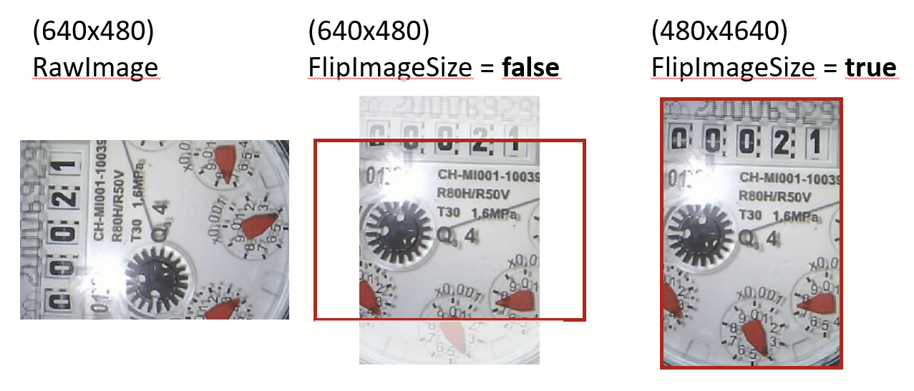

Parameters
This page lists all available Configuration Parameters. If a parameter or section has a tick box on its left side, you can disable it. In such case the functionality gets disabled respectively the default values will be used.
Note
This is an auto-generated page! See the README for details!
List of all Parameters
AllowNegativeRatesCheckDigitIncreaseConsistencyErrorMessageNUMBER.AllowNegativeRatesNUMBER.AnalogDigitalTransitionStartNUMBER.DecimalShiftNUMBER.ExtendedResolutionNUMBER.IgnoreLeadingNaNNUMBER.MaxRateTypeNUMBER.MaxRateValuePreValueAgeStartupPreValueUse
BrightnessContrastDemoFixedExposureImageQualityImageSizeLEDIntensityRawImagesLocationRawImagesRetentionSaturationWaitBeforeTakingPicture
Section Alignment
Parameter AlignmentAlgo
Default Value: Default
Warning
This is an Expert Parameter! Only change it if you understand what it does!
Algorithm used for the alignment step.
Available options:
- Default: Use only red color channel
- HighAccuracy: Use all 3 color Channels (3x slower)
- Fast: First time use HighAccuracy, then only check if the image is shifted
Parameter FlipImageSize
Default Value: false
Warning
This is an Expert Parameter! Only change it if you understand what it does!
Note
This parameter is not accessible through the Web Interface Configuration Page!
This parameter can be used to rotate the viewport together with the alignment rotation: 
Parameter InitialMirror
Default Value: false
Option for initially mirroring the image on the original x-axis.
Note
This parameter is accessible on the Reference Image Page but not on the Config page!
Parameter InitialRotate
Default Value: 179
Initial rotation of image before alignment in degree (1...359)
Note
This parameter is accessible on the Reference Image Page but not on the Config page!
Parameter SearchFieldX
Default Value: 20
Warning
This is an Expert Parameter! Only change it if you understand what it does!
X-size (width) in which the reference is searched.
Parameter SearchFieldY
Default Value: 20
Warning
This is an Expert Parameter! Only change it if you understand what it does!
Y-size (height) in which the reference is searched.
Section Analog
Parameter CNNGoodThreshold
Default Value: 0.5
Warning
This is an Expert Parameter! Only change it if you understand what it does!
Threshold above which the classification should be to accept the value (only meaningful for digits).
Warning
This is only supported for the ana-class100 models!
Parameter ExtendedResolution
Warning
This parameter is unused!
Use NUMBER.ExtendedResolution instead!
Parameter Model
Default Value: /config/ana-cont_11.3.1_s2.tflite
Path to CNN model file for image recognition. See here for details.
Parameter ROIImagesLocation
Default Value: /log/analog
Location to store separated analog images on the SD-Card for logging.
Warning
A SD-Card has limited write cycles. Since the device does not do Wear Leveling, this can wear out your SD-Card!
Parameter ROIImagesRetention
Default Value: 3
Days to keep the separated analog images (0 = forever).
Section AutoTimer
Parameter AutoStart
Default Value: true
Warning
This is an Expert Parameter! Only change it if you understand what it does!
Automatically start the Flow (Digitization Rounds) immediately after power up.
Note
Typically this is set to true.
The only reason to set it to false is debugging or if you want to trigger it manually using the REST API or MQTT-API.
Parameter Interval
Default Value: 5
Interval in minutes in which the Flow (Digitization Round) is run.
If a round takes longer than this interval, the next round gets postponed until the current round completes.
Section DataLogging
Parameter DataFilesRetention
Default Value: 3
Number of days to keep the data files (0 = forever).
Parameter DataLogActive
Default Value: true
Activate data logging to SD-Card.
Warning
A SD-Card has limited write cycles. Since the device does not do Wear Leveling, this can wear out your SD-Card!
Section Debug
Parameter LogLevel
Default Value: 1 (ERROR)
Define the log level for the logging to the SD-Card.
Available options:
- 1: ERROR
- 2: WARNING
- 3: INFO
- 4: DEBUG
As higher the level, as more log messages get written to the SD-Card.
-
Warning
DEBUG or INFO might damage the SD-Card if enabled long term due to excessive writes to the SD-Card!
A SD-Card has limited write cycles. Since the device does not do Wear Leveling, this can wear out your SD-Card!
Parameter LogfilesRetention
Default Value: 3
Number of days to keep the log files (0 = forever).
Section Digits
Parameter CNNGoodThreshold
Default Value: 0.5
Warning
This is an Expert Parameter! Only change it if you understand what it does!
Threshold above which the classification should be to accept the value (only meaningful for digits).
Warning
This is only supported for the dig-class100 models!
Parameter Model
Default Value: /config/dig-cont_0600_s3.tflite
Path to CNN model file for image recognition. See here for details.
Parameter ROIImagesLocation
Default Value: /log/digit
Location to store separated digit images on the SD-Card for logging.
Warning
A SD-Card has limited write cycles. Since the device does not do Wear Leveling, this can wear out your SD-Card!
Parameter ROIImagesRetention
Default Value: 3
Days to keep the separated digit images (0 = forever).
Section GPIO
Parameter IO0
Default Value: input disabled 10 false false
Warning
This is an Expert Parameter! Only change it if you understand what it does!
This parameter can be used to configure the GPIO IO0 pin.
Warning
This pin is only usable with restrictions! It must be disabled when the camera is used. Additionally, it is used to activate Bootloader mode and must therefore be HIGH after a reset!
Parameters:
- GPIO 0 state: One of input, input pullup, input pulldown or output.
- GPIO 0 use interrupt: Enable interrupt trigger
- GPIO 0 PWM duty resolution: LEDC PWM duty resolution in bit
- GPIO 0 enable MQTT: Enable MQTT publishing/subscribing
- GPIO 0 enable HTTP: Enable HTTP write/read
- GPIO 0 name: MQTT topic name (empty = GPIO0). Allowed characters: a-z, A-Z, 0-9, _, -.
Parameter IO1
Default Value: input disabled 10 false false
Warning
This is an Expert Parameter! Only change it if you understand what it does!
This parameter can be used to configure the GPIO IO1 pin.
Warning
This pin is by default used for the serial communication as TX pin (USB logging)!
Parameters:
- GPIO 1 state: One of input, input pullup, input pulldown or output.
- GPIO 1 use interrupt: Enable interrupt trigger
- GPIO 1 PWM duty resolution: LEDC PWM duty resolution in bit
- GPIO 1 enable MQTT: Enable MQTT publishing/subscribing
- GPIO 1 enable HTTP: Enable HTTP write/read
- GPIO 1 name: MQTT topic name (empty = GPIO1). Allowed characters: a-z, A-Z, 0-9, _, -.
Parameter IO12
Default Value: input-pullup disabled 10 false false
Warning
This is an Expert Parameter! Only change it if you understand what it does!
This parameter can be used to configure the GPIO IO12 pin.
Note
This pin is usable without known restrictions!
Parameters:
- GPIO 12 state: One of external-flash-ws281x, input, input pullup, input pulldown or output.
- GPIO 12 use interrupt: Enable interrupt trigger
- GPIO 12 PWM duty resolution: LEDC PWM duty resolution in bit
- GPIO 12 enable MQTT: Enable MQTT publishing/subscribing
- GPIO 12 enable HTTP: Enable HTTP write/read
- GPIO 12 name: MQTT topic name (empty = GPIO12). Allowed characters: a-z, A-Z, 0-9, _, -.
Parameter IO13
Default Value: input-pullup disabled 10 false false
Warning
This is an Expert Parameter! Only change it if you understand what it does!
This parameter can be used to configure the GPIO IO13 pin.
Note
This pin is usable without known restrictions!
Parameters:
- GPIO 13 state: One of input, input pullup, input pulldown or output.
- GPIO 13 use interrupt: Enable interrupt trigger
- GPIO 13 PWM duty resolution: LEDC PWM duty resolution in bit
- GPIO 13 enable MQTT: Enable MQTT publishing/subscribing
- GPIO 13 enable HTTP: Enable HTTP write/read
- GPIO 13 name: MQTT topic name (empty = GPIO13). Allowed characters: a-z, A-Z, 0-9, _, -.
Parameter IO3
Default Value: input disabled 10 false false
Warning
This is an Expert Parameter! Only change it if you understand what it does!
This parameter can be used to configure the GPIO IO3 pin.
Warning
This pin is by default used for the serial communication as RX pin (USB logging)!
Parameters:
- GPIO 3 state: One of input, input pullup, input pulldown or output.
- GPIO 3 use interrupt: Enable interrupt trigger
- GPIO 3 PWM duty resolution: LEDC PWM duty resolution in bit
- GPIO 3 enable MQTT: Enable MQTT publishing/subscribing
- GPIO 3 enable HTTP: Enable HTTP write/read
- GPIO 3 name: MQTT topic name (empty = GPIO3). Allowed characters: a-z, A-Z, 0-9, _, -.
Parameter IO4
Default Value: built-in-led disabled 10 false false
Warning
This is an Expert Parameter! Only change it if you understand what it does!
This parameter can be used to configure the GPIO IO4 pin.
Warning
This pin is only usable with restrictions! By default, it is used for build-in flash light (onboard LED).
Parameters:
- GPIO 4 state: One of built-in-led, input, input pullup, input pulldown or output.
- GPIO 4 use interrupt: Enable interrupt trigger
- GPIO 4 PWM duty resolution: LEDC PWM duty resolution in bit
- GPIO 4 enable MQTT: Enable MQTT publishing/subscribing
- GPIO 4 enable HTTP: Enable HTTP write/read
- GPIO 4 name: MQTT topic name (empty = GPIO4). Allowed characters: a-z, A-Z, 0-9, _, -.
Parameter LEDColor
Default Value: 150 150 150
Color of the attached LEDs to GPIO12 in (R)ed, (G)reen (B)lue from 0 (full off) .. 255 (full on).
(See IO12 parameter).
Parameter LEDNumbers
Default Value: 2
Number of LEDs on the external LED-stripe attached to GPIO12 (See IO12 parameter).
Parameter LEDType
Default Value: WS2812
Type of the WS2812x which is connected to GPIO12 (See IO12 parameter).
Parameter MainTopicMQTT
Default Value: wasserzaehler/GPIO
Note
This parameter is not accessible through the Web Interface Configuration Page!
Please fill me with an explanation and useful links
Section InfluxDB
Parameter Database
Default Value: ''
Name of the Database into which to publish the values.
Parameter Measurement
Default Value: undefined
Name of the Measurement to use to publish the value.
Parameter Uri
Default Value: undefined
URI of the HTTP interface to InfluxDB v1, without trailing slash, e.g. http://192.168.1.1:8086.
Note
Currently only InfluxDB v1 is supported!
Parameter password
Default Value: undefined
Password for the InfluxDB v1 authentication.
Note
Currently only InfluxDB v1 is supported!
Parameter user
Default Value: undefined
Username for the InfluxDB v1 authentication.
Note
Currently only InfluxDB v1 is supported!
Section MQTT
Parameter ClientID
Default Value: watermeter
ClientID to connect to the MQTT broker.
If disabled, the hostname will be used.
Parameter HomeassistantDiscovery
Default Value: true
Enable or disable the Homeassistant Discovery.
See here for details about the discovery.
Parameter MainTopic
Default Value: watermeter
MQTT main topic, under which the counters are published.
The single value will be published with the following key: MAINTOPIC/NUMBER/RESULT_TOPIC where:
- NUMBER is the name of the value (a meter might have more than one value).
The names get defined in the analog and digital ROI configuration (defaults to main).
- RESULT_TOPIC can be one of value, rate, timestamp, error, ....
The general connection status can be found in MAINTOPIC/CONNECTION.
See MQTT Result Topics for a full list of topics.
Parameter MeterType
Default Value: other
Select the Meter Type so the sensors have the right units in Homeassistant.
Note
For Watermeter you need to have Homeassistant 2022.11 or newer!
Please also make sure that the selected Meter Type matches the dimension of the value provided by the meter!
Eg. if your meter provides m³, you need to also set it to m³.
Alternatively you can set the parameter DecimalShift to 3 so the value is converted to liters!
Parameter RetainMessages
Default Value: true
Enable or disable the Retain Flag for all MQTT entries.
Parameter Uri
Default Value: mqtt://IP-ADRESS:1883
URI to the MQTT broker including the port. E.g. mqtt://192.168.1.1:1883.
Parameter password
Default Value: PASSWORD
Password for MQTT authentication.
Parameter user
Default Value: USERNAME
Username for MQTT authentication.
Section PostProcessing
Parameter AllowNegativeRates
Warning
This parameter is unused!
Use NUMBER.AllowNegativeRates instead!
Parameter CheckDigitIncreaseConsistency
Default Value: false
Warning
This is an Expert Parameter! Only change it if you understand what it does!
An additional consistency check. It especially improves the zero crossing check between digits.
Parameter ErrorMessage
Default Value: true
Warning
This is an Expert Parameter! Only change it if you understand what it does!
Do not show error message in return value. In an error case, the last valid number will be used for the various transmission protocols (MQTT, InfluxDB, REST, ...).
Parameter <NUMBERS>.AllowNegativeRates
Default Value: false
Allow a meter to count backwards (decreasing values).
Note
This is unusual (it means there is a negative rate) and not wanted in most cases!
Parameter <NUMBER>.AnalogDigitalTransitionStart
Default Value: 9.2
This can be used if you have wrong values, but the recognition of the individual ROIs are correct.
Look for the start of changing of the first digit and note the analog pointer value behind.
Set it here. Only used on combination of digits and analog pointers.
See here for details.
Parameter <NUMBER>.DecimalShift
Default Value: 0
Shift the decimal separator (positiv or negativ).
Eg. to move from 'm³' to 'liter' (1 m³ equals 1000 liters), you need to set it to +3.
Parameter <NUMBER>.ExtendedResolution
Default Value: false
Use the decimal place of the last analog counter for increased accuracy.
Note
This parameter is only supported on the *-class* and *-const models! See Choosing-the-Model for details.
Parameter <NUMBER>.IgnoreLeadingNaN
Default Value: true
Leading N's will be deleted before further processing.
This is only relevant for models which use N!
See here for details.
Parameter <NUMBER>.MaxRateType
Default Value: AbsoluteChange
Defines if the Change Rate compared to the previous value is calculated as absolute change (AbsoluteChange) or
as rate normalized to the interval (RateChange = change/minute).
Parameter <NUMBER>.MaxRateValue
Default Value: 0.05
Maximum change of a reading.
Depending on the settings of <NUMBER>.MaxRateType it is either treated as absolute or relative!
Parameter PreValueAgeStartup
Default Value: 720
Warning
This is an Expert Parameter! Only change it if you understand what it does!
Time in minutes, how long a previous read value is valid after reboot.
Parameter PreValueUse
Default Value: true
Use the previous value (value from previous round) for consistency checks.
This also works through a reboot of the device!
Section System
Parameter Hostname
Default Value: undefined
Warning
This is an Expert Parameter! Only change it if you understand what it does!
Hostname for the device.
It gets automatically transferred to /wlan.ini on the SD-Card at next startup.
Parameter RSSIThreshold
Default Value: ''
WLAN Mesh Parameter: Threshold for the RSSI value to check for start switching access point in a mesh system.
Possible values: -100 .. 0, 0 = disabled.
It gets automatically transferred to /wlan.ini on the SD-Card at next startup.
Parameter SetupMode
Default Value: true
Note
This parameter is not accessible through the Web Interface Configuration Page!
Set this parameter to true to stay in the Setup Mode after the next start of the device.
Parameter TimeServer
Default Value: pool.ntp.org
Warning
This is an Expert Parameter! Only change it if you understand what it does!
Time server to synchronize system time. If it is disabled or undefined, pool.ntp.org will be used.
You can also set it to the IP of your router. Many routers like Fritzboxes can act as a local NTP server.
To disable NTP, you need to activate it but set the TimeServer config to be empty ("").
In such case the time always starts at 01.01.1970 after each power cycle!
Parameter TimeZone
Default Value: CET-1CEST,M3.5.0,M10.5.0/3
Time zone in POSIX syntax (Europe/Berlin = CET-1CEST,M3.5.0,M10.5.0/3 - incl. daylight saving)
Check the table on http://<DEVICE IP>/timezones.html to find the settings for your region.
Section TakeImage
Parameter Brightness
Default Value: 0
Warning
This is an Expert Parameter! Only change it if you understand what it does! This parameter can also be set on the Reference Image configuration.
Image Brightness (-2 .. 2)
Parameter Contrast
Default Value: 0
Warning
This is an Expert Parameter! Only change it if you understand what it does! This parameter can also be set on the Reference Image configuration.
Image Contrast (-2 .. 2)
Note
Camera driver is not fully supporting this setting yet (no impact on image)
Parameter Demo
Default Value: false
Enable to use demo images instead of the real camera images.
Make sure to have a /demo folder on your SD-Card and it contains the expected files!
Check here for details.
Parameter FixedExposure
Default Value: false
Warning
This is an Expert Parameter! Only change it if you understand what it does!
Fixes the illumination setting of camera at the startup and uses this later --> individual round is faster.
Parameter ImageQuality
Default Value: 12
Warning
This is an Expert Parameter! Only change it if you understand what it does!
Quality index for pictures. 0 (high) .. 63 (low)
Warning
Values below 12 can result in reboots as the image gets larger and might no longer fit in the available RAM!
Parameter ImageSize
Default Value: VGA
Warning
This is an Expert Parameter! Only change it if you understand what it does!
Size of the camera picture.
Available options:
- VGA (640 x 480 pixel)
- QVGA (320 x 240 pixel)
Parameter LEDIntensity
Default Value: 50
Warning
This is an Expert Parameter! Only change it if you understand what it does! This parameter can also be set on the Reference Image configuration.
Set the Flash LED Intensity.
Parameter RawImagesLocation
Default Value: /log/source
Location on the SD-Card to store the raw images for logging.
Warning
A SD-Card has limited write cycles. Since the device does not do Wear Leveling, this can wear out your SD-Card!
Parameter RawImagesRetention
Default Value: 15
Number of days to keep the raw images (0 = forever)
Parameter Saturation
Default Value: 0
Warning
This is an Expert Parameter! Only change it if you understand what it does! This parameter can also be set on the Reference Image configuration.
Image Saturation (-2 .. 2)
Note
Camera driver is not fully supporting this setting yet (no impact on image)!
Parameter WaitBeforeTakingPicture
Default Value: 5
Warning
This is an Expert Parameter! Only change it if you understand what it does!
Waiting time between switching illumination on and taking the picture (in seconds)-